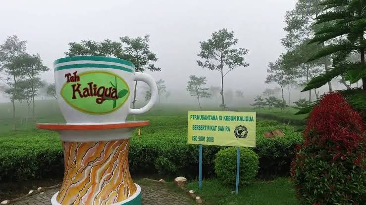
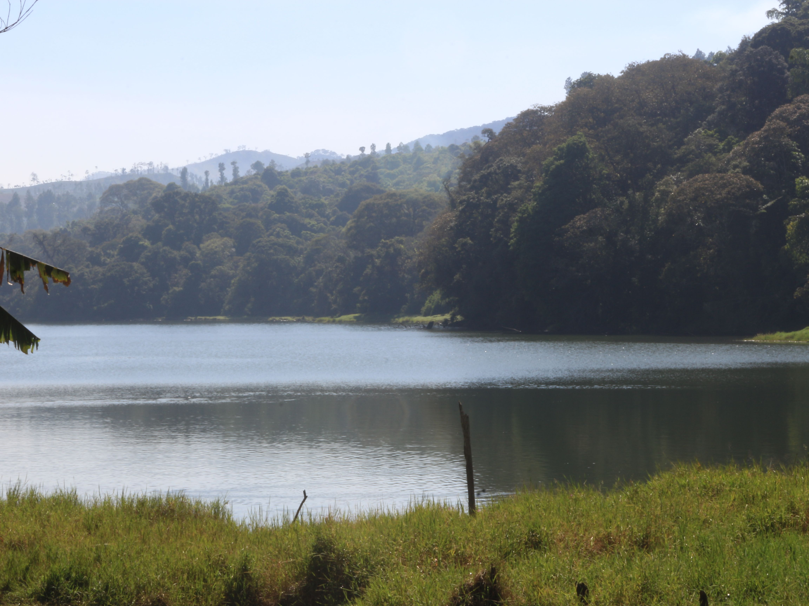
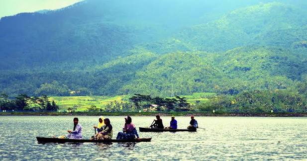

Destinasi impian yang wajib Anda kunjungi sekali seumur hidup

AWKTAgrowisata Kebun Teh Kaligua merupakan salah satu destinasi wisata paling ikonik di Kabupaten Brebes. Berada di ketinggian sekitar 1.500–2.050 meter di atas permukaan laut, tempat ini menyajikan hamparan perkebunan teh yang luas dengan udara pegunungan yang sangat segar.
Lihat Detail →
Sisi TRTelaga Ranjeng adalah telaga alami yang berada di dalam kawasan cagar alam di bawah naungan perhutani. Lokasinya masih berada satu jalur menuju arah perkebunan teh Kaligua.
Lihat Detail →
Sisi WPTerletak di Desa Winduaji, Kecamatan Paguyangan, Waduk Penjalin merupakan bendungan peninggalan era kolonial Belanda yang dibangun sekitar tahun 1930-an untuk mengairi lahan pertanian.
Lihat Detail →